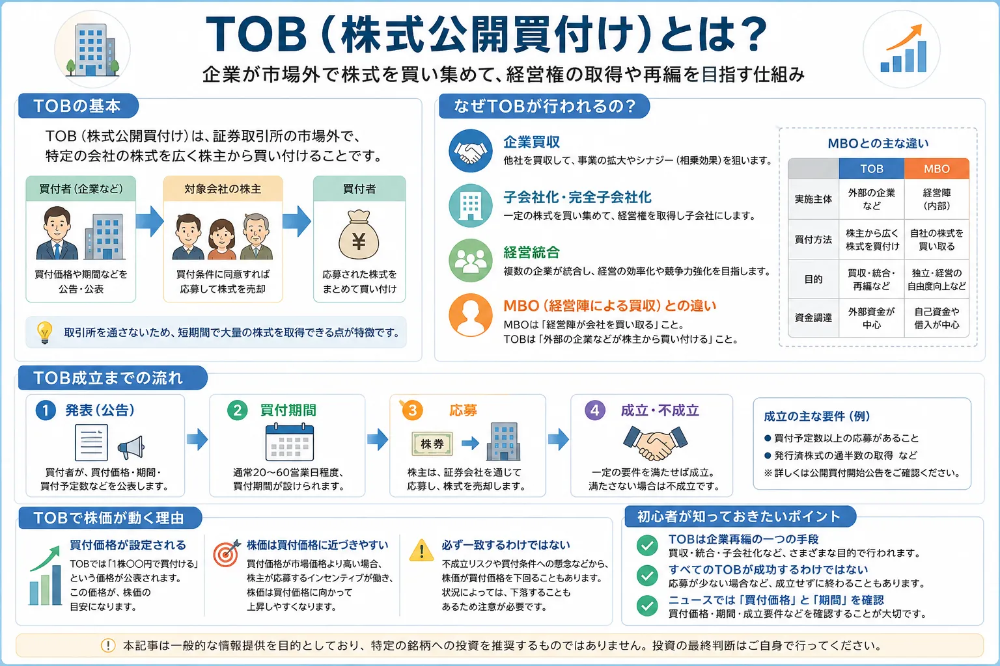

話題・トレンド
TOB（株式公開買付け）とは？なぜ株価が動くの？初心者向けに解説
TOBは、企業買収や子会社化、非公開化などのニュースでよく登場する言葉です。発表直後に対象企業の株価が大きく動くこともありますが、買付価格どおりに必ず売却できるとは限りません。本記事では、TOBの基本的な仕組み、株価が動く理由、成立までの流れ、MBOとの違いを初心者向けに整理します。
Overview
TOBの仕組みを最初に整理

- 買い手が買付価格・期間・予定株数などの条件を公表します。
- 株主は条件を確認し、TOBへ応募するか、市場で売却するか、保有を続けるかを判断します。
- 応募株数や成立条件によっては、すべての応募株式が買い付けられない場合があります。
- 完全子会社化を目的とする場合、TOB後に上場廃止や追加手続きが予定されることがあります。
Definition
TOBとは？
TOBは「Take-Over Bid」の略称で、日本語では株式公開買付けと呼ばれます。買付価格や買付期間などを公表し、証券取引所の市場を通さずに、不特定多数の株主から株式などを買い付ける仕組みです。
株式公開買付けの意味
条件を公開して株主へ売却を呼びかける
買付者は、対象企業、買付価格、期間、買付予定数、成立条件などを公表します。株主はその条件を確認したうえで応募します。
市場外で買い集める
証券取引所での通常売買とは異なる
市場で大量の株式を買うと価格が急上昇し、必要な株数を計画どおり取得しにくくなる場合があります。TOBでは事前に条件を示し、市場外でまとめて取得を目指します。
なぜ行われるのか
経営権の取得や企業再編を進めるため
企業買収、子会社化、完全子会社化、非公開化、資本関係の見直しなど、一定数の株式を取得したい場面で利用されます。
通常の株式売買との違い：市場取引では、その時点の株価で売買が成立します。TOBでは、公表された買付価格や期間などの条件に基づき、所定の手続きで応募します。
Purpose
なぜTOBが行われるの？
TOBは、株価を動かすために行われる制度ではありません。主な目的は、経営権の取得やグループ再編などに必要な株式を、条件を明示して取得することです。
企業買収
対象企業の経営権を取得する
他社の株式を一定割合以上取得し、経営に大きな影響を与えたり、経営権を取得したりする目的で行われます。
子会社化・完全子会社化
グループ経営を一体化する
すでに資本関係がある企業の株式を追加取得し、子会社化や完全子会社化を目指す場合があります。完全子会社化では、TOB後の上場廃止が予定されることもあります。
経営統合・事業再編
重複事業や資本関係を整理する
グループ内の意思決定を速める、重複する事業を整理する、長期的な経営改革を進めるなど、企業再編の一環として利用されます。
非公開化
株式市場から離れて経営改革を進める
短期的な株価変動に左右されず、中長期の改革を進めるために非公開化を目指す場合があります。ただし、非公開化の妥当性や買付価格の公正さも重要な論点になります。
買収・MBOとの違い
| 用語 | 意味 | TOBとの関係 |
|---|---|---|
| TOB | 条件を公表し、市場外で株式を買い付ける手続き | 株式を取得するための具体的な方法 |
| 企業買収 | 他社の経営権や事業を取得する取引全体 | 買収を実現する手段としてTOBが使われることがある |
| MBO | 経営陣が自社の株式や事業を買収する取引 | MBOを実行する方法としてTOBが使われることがある |
※ スマートフォンでは横にスクロールできます。
TOBは「目的」ではなく、株式を取得するための手続き・方法です。企業買収やMBOは取引の目的や主体を表し、その実行手段としてTOBが用いられることがあります。
Stock Price
TOBで株価が動く理由
TOBが発表されると、対象企業の株価は買付価格を意識して大きく動くことがあります。特に、買付価格が発表前の市場価格より高く設定された場合は、株価が急上昇しやすくなります。
買付価格が設定される
TOBでは、1株あたりの買付価格が公表されます。市場参加者は、その価格と現在の株価を比較します。
買付価格へ近づきやすい
TOBが成立し、応募した株式が買い付けられる見込みが高いと考えられるほど、市場価格は買付価格へ近づきやすくなります。
不確実性が価格差になる
不成立、中止、応募手続き、買付上限、成立条件などの不確実性があるため、市場価格が買付価格と完全に一致しない場合があります。
| 状況 | 市場で意識されること | 株価への影響例 |
|---|---|---|
| 成立の可能性が高い | 買付価格で売却できる可能性 | 買付価格に近づきやすい |
| 不成立リスクがある | 成立条件や応募株数への不安 | 買付価格より低く推移する場合がある |
| 買付上限がある | 応募しても全株が買い付けられない可能性 | 価格差が残る場合がある |
| 対抗提案への期待がある | 別の買い手や条件引き上げの可能性 | 買付価格を上回る場合もある |
| TOB終了後 | 上場維持・上場廃止・今後の手続き | 結果や見通しに応じて再び動く |
※ スマートフォンでは横にスクロールできます。
「TOBなら必ず利益が出る」わけではありません。発表後に買付価格へ近づいたところで購入すると、価格差が小さい一方、不成立時には発表前の水準へ大きく下落する可能性があります。
Process
TOB成立までの流れ
一般的なTOBは、発表、買付期間、株主による応募、結果公表という流れで進みます。実際の条件や日程は案件ごとに異なるため、公開買付届出書や企業の適時開示を確認する必要があります。
発表
買付価格、期間、予定株数、目的、成立条件などが公表されます。
買付期間
株主が開示資料を確認し、応募するかどうかを検討します。
応募
指定された公開買付代理人の証券会社などを通じて手続きを行います。
成立・不成立
応募株数や条件を確認し、結果と買付株数などが公表されます。
| 段階 | 主な内容 | 初心者が確認したい点 |
|---|---|---|
| 発表 | 買付条件と目的が開示される | 買付価格、期間、買付予定数、下限・上限、対象企業の意見 |
| 買付期間 | 応募を受け付ける | 期限、代理人、応募方法、変更・延長の有無 |
| 応募 | 株主が所定の手続きを行う | 口座移管の要否、手続期限、応募取消しの条件 |
| 結果公表 | 応募株数と成立可否が発表される | 実際の買付株数、あん分比例、決済日、今後の方針 |
| TOB後 | 子会社化・上場廃止などが進む場合がある | 上場維持の有無、追加取得や株式併合などの予定 |
※ スマートフォンでは横にスクロールできます。
TOBへの応募には、指定された証券会社での口座開設や株式の移管が必要になる場合があります。手続きや期限は案件・証券会社ごとに異なるため、必ず最新の公式資料を確認してください。
Beginner Checklist
初心者が知っておきたいポイント
TOBのニュースを見るときは、株価の上昇だけに注目せず、目的・条件・成立可能性・TOB後の予定を順番に確認することが大切です。
TOBは企業再編の一つ
TOBは企業買収、子会社化、非公開化などを進めるための手法です。対象企業の事業内容だけでなく、買付者が何を目的としているのかも確認しましょう。
すべてのTOBが成功するわけではない
応募株数が下限に届かない、前提条件を満たさない、計画が変更・中止されるなど、不成立となる可能性があります。発表時点で結果が確定しているわけではありません。
買付価格だけでなく期間も確認する
買付価格、買付期間、買付予定数の下限・上限、決済日、公開買付代理人などを確認します。条件変更や期間延長が発表される場合もあります。
対象企業の意見を確認する
対象企業がTOBに賛同しているのか、応募を推奨しているのか、中立なのか、反対しているのかは重要な情報です。経営陣の意見だけでなく、その理由も確認します。
上場廃止の予定を確認する
完全子会社化や非公開化を目的とする場合、TOB後に上場廃止となる可能性があります。応募しない株主へのその後の手続きも、開示資料で確認する必要があります。
- 誰が、何の目的でTOBを行うのか
- 買付価格は発表前の株価と比べてどうか
- 買付期間と応募手続きはどうなっているか
- 買付予定数に下限・上限があるか
- 対象企業は賛同・推奨・反対のどれか
- TOB後に上場廃止や完全子会社化が予定されているか
Related Articles
TOBと一緒に確認したい基礎知識
TOBのニュースを理解するには、株式投資、株価の動き、企業価値、株式制度の基礎を一緒に確認すると分かりやすくなります。
FAQ
TOBに関するよくある質問
-
TOBとは何ですか？
TOBは株式公開買付けのことで、買付価格や買付期間などを公表し、証券取引所の市場外で不特定多数の株主から株式を買い付ける仕組みです。企業買収、子会社化、完全子会社化、非公開化などで利用されます。 -
なぜ株価が上がることがあるのですか？
TOBの買付価格が発表前の市場価格より高い場合、その価格で売却できる可能性が意識され、市場価格が買付価格へ近づきやすくなるためです。ただし、成立条件や不成立リスクがあるため、必ず買付価格と一致するわけではありません。 -
TOBに応募しないとどうなりますか？
応募しない場合は、原則として株式を保有し続けるか、市場で売却することになります。ただし、完全子会社化や上場廃止が予定される案件では、TOB後の株式併合などの手続きにより、株式が金銭に換えられる場合があります。案件ごとの開示資料を確認してください。 -
TOBは必ず成立しますか？
必ず成立するわけではありません。応募株数が買付予定数の下限に届かない場合、前提条件を満たさない場合、計画が変更・中止される場合など、不成立となる可能性があります。 -
MBOとの違いは何ですか？
TOBは、条件を公表して市場外で株式を買い付ける手続きです。MBOは、経営陣が自社の株式や事業を買収する取引を指します。MBOを実行するための方法として、TOBが利用されることがあります。
Summary
まとめ｜TOBは企業再編と株価の関係を理解する重要テーマ
- TOBは、買付価格や期間などを公表し、市場外で株式を買い集める仕組みです。
- 企業買収、子会社化、完全子会社化、経営統合、非公開化などで利用されます。
- 買付価格が設定されるため、市場価格はその価格へ近づきやすくなります。
- 不成立リスクや買付上限などがあるため、市場価格と買付価格は必ず一致するわけではありません。
- 初心者は買付価格だけでなく、期間、成立条件、対象企業の意見、上場廃止の予定も確認することが大切です。
Next Step
株価がニュースで動く基本も確認する
TOB発表後の値動きを理解するには、株価が需要と供給、業績、将来期待、ニュースによって変化する基本も一緒に学ぶと整理しやすくなります。
ご利用にあたっての注意事項
本記事は一般的な情報提供と金融教育を目的としており、特定の企業・銘柄・TOBへの応募・証券会社の推奨や、投資の勧誘を目的としたものではありません。TOBの条件、応募方法、成立要件、税務上の取扱い、上場廃止後の手続きなどは案件ごとに異なり、変更される場合があります。実際に判断や手続きを行う際は、公開買付届出書、対象企業および買付者の適時開示、利用する証券会社の案内など、最新の公式情報を確認し、ご自身の判断と責任で行ってください。